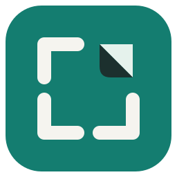
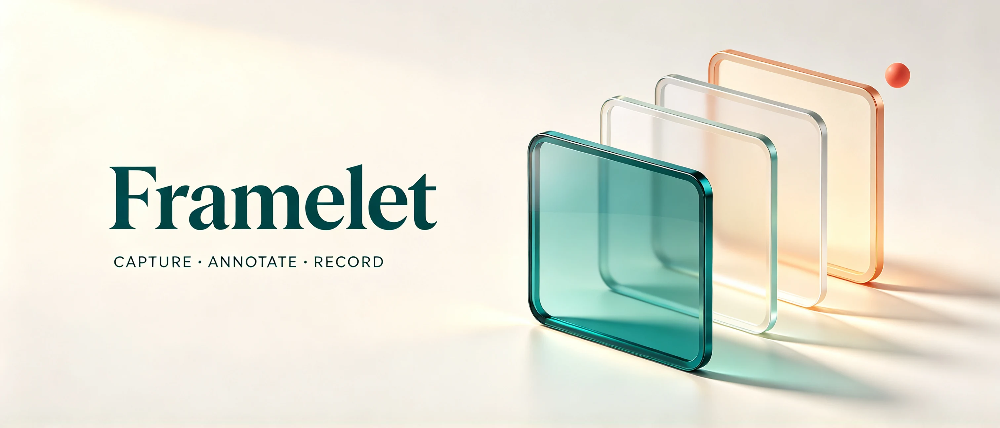

01CAPTURE
先选好，再截下。
窗口和屏幕截图先进入点选：移动鼠标查看目标，单击确认。截图前就知道会留下哪里；也可以自由框选区域。
区域截图Ctrl + PrtSc

Framelet 帧简A LITTLE TOOL. A CLEARER PICTURE.
一张截图，一句标注，一段演示。
用顺手的小工具，把想说的事情表达清楚。

01 / A CLEARER WORKFLOW
从选择画面，到整理重点，再到记录过程。
让简单的操作，更确定一些。
窗口和屏幕截图先进入点选：移动鼠标查看目标，单击确认。截图前就知道会留下哪里；也可以自由框选区域。
截图后，直接拖动图片四边或四角裁切，松开即可应用，撤销也方便。再加上箭头、文字、高亮或马赛克，让说明更清楚。
录制区域始终有边框，红色表示录制，黄色表示暂停。结束时选择保存、放弃或返回；不满意的录像，可以直接放弃。
应用界面目前为中文。以下为应用界面截图，点击图片可放大查看，详细操作见使用说明。
02 / READY WHEN YOU ARE
从 GitHub Releases 下载 Windows x64 ZIP 文件。
运行 Framelet.exe。已包含运行时，无需另装 .NET。
按 Ctrl + PrtSc，拖出选区，开始编辑。
默认无声录屏使用 Windows 原生媒体能力，保存 H.264 MP4，无需 FFmpeg。录音、视频剪辑与 WMV 转换是可选扩展，需要另行配置 FFmpeg。
可以。结束录制或关闭录像机时，可选择保存、放弃或返回。录制中与暂停时，也能直接放弃录像。取消保存位置选择后，录像仍保留，可继续录制或放弃。
便携版面向 Windows x64；原生录屏需要系统具备 Windows 媒体组件。图像支持 PNG、JPEG、BMP、GIF、TIFF，也可导出单页 PDF。GIF / TIFF 仅处理首帧或首页。
支持框选区域或点选屏幕后自动滚动、采集与拼接，到底自动完成。F8 暂停或继续，F9 提前完成，Esc 取消。建议框选正文；动态页面或无法可靠对齐的内容会暂停。
欢迎在 GitHub Issues 提交版本、Windows 缩放比例和复现步骤。真实多屏混合 DPI、音频与长时间录制仍需进一步验证，已验证范围见验证记录。